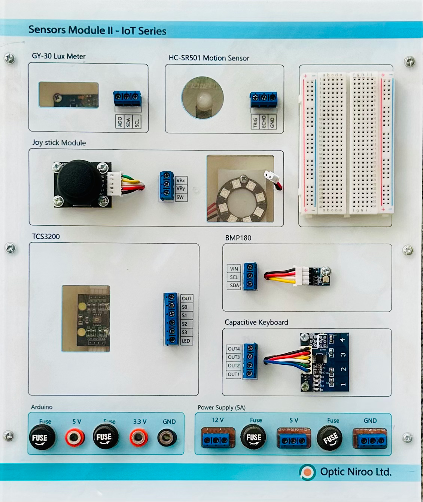

| نام تابلو: تابلو 04: حسگرهای دوم |
سال ساخت: 2025 |
| دستهبندی: تابلو |
نام شرکت سازنده: اپتیکنیرو - Optic Niroo |
| کشور سازنده: ایران |
تابلو 04 «حسگرهای دوم» دربردارنده موارد زیر است:
- حسگر GY-30 (حسگر شدت نور - لوکس متر)
- حسگر HC-SR501 (حسگر تشخیص حرکت)
- ماژول Joystick (دستهبازی آنالوگ) + 8 عدد LED در 8 طرف (برای بازخورد موقعیت دسته)
- حسگر TCS3200 (حسگر تشخیص شدت رنگها)
- حسگر BMP180 (حسگر دما و فشار محیط)
- ماژول صفحه کلید خازنی Capacitive Keyboard 4 کلیدی
- بِرِدبُرد کوچک
آزمایشهایی که این تابلو در آنها به کار رفته است
- آزمایش 01: پیادهسازی چراغ راهنمایی با قابلیت چشمکزن
- آزمایش 02: پیادهسازی کرکره برقی
- آزمایش 03: پیادهسازی خودروی اسباببازی ساده
- آزمایش 04: پیادهسازی خودروی اسباببازی ساده با احترام به چراغ راهنمایی
- آزمایش 05: پیادهسازی ترموستات هوشمند
- آزمایش 06: اجرای نمونه ساده از خانه هوشمند
- آزمایش 07: پیادهسازی نمونه ساده خودروی هوشمند با سامانه پیشگیری از تصادف
- آزمایش 10: سامانه امنیتی با قابلیت ارسال پیامکهای اضطراری